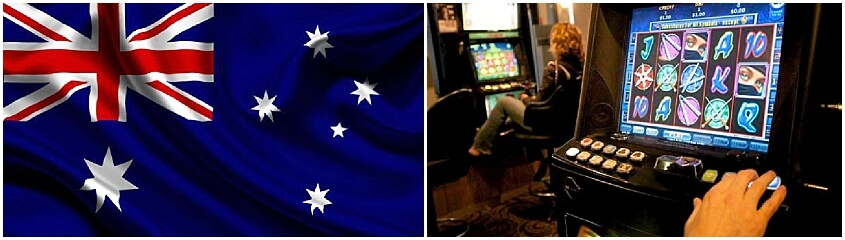

The implementation of limits on poker machines across the country is a welcome and sensible introduction, but it has nevertheless caused something of a stir within the all powerful Australian gambling industry. In addition to introduction limits on player spending, the government has also introduced caps on the number of slots and electronic gaming machines that are allowed to be hosted in a particular geographical region or gaming venue. At first, the effectiveness of the caps was questioned, as operators were unsure that fewer poker machines would reduce rates of problem gambling, but a recent research report addresses this issue: -Study of the Impact of Caps on Electronic Gaming Machines-.
In Australia, the number of poker machines varies from region to region. New South Wales has the most amount of slots in the country with over 102 000 total (76 000 in clubs, 24 000 in hotels and 1500 in casinos). Queensland has approximately 39 000 (19 000 in clubs, 17 000 in hotels and 3000 in casinos) while Victoria has about 29 000 (13 000 in clubs and hotels and 2500 in casinos).

New South Wales presents the highest number of machines per capita, with 20.5 machines per person. Queensland and South Australia present the next highest rates with 14.3 and 13.3, respectively. Despite Victoria having one of the highest population of poker machines, there are only 8.1 machines per person in the region.
New South Wales has the highest cap on poker machines, as clubs are allowed to have 450, hotels are allowed 30 and casinos are allowed 1500. In Queensland, clubs can have 280, hotels are permitted 40 and casinos are permitted over 3000.
In New South Wales, 1800 hotels, 1300 clubs and only 1 casino house poker machines. In Queensland, 610 clubs, 748 hotels and 4 casinos are home to electronic gaming devices. In Victoria, there are 293 clubs, 251 hotels and 1 casino that have slots.
The study highlights that the major concern in this type of research is determining whether the number of machines available per venue is the reason behind growing problem gambling rates or if the types of venues in which poker machines are available are to blame. What is interesting to note is that Western Australia presents one of the lowest rates of problem gambling in the country. The study shows that the area does not allowed electronic gaming machines in clubs or hotels. They are only hosted in local casinos, a fact which may contribute to the region's low problem gambling rates.
The study finds that caps on poker machines have been successful in controlling the rates of problem gambling across the country. It seems that both the number of machines in a venue and the type of venue in which they are located have some correlation with the rate of gambling addiction, findings which are likely to aid in the fight against problem gambling.
To read the full report, click here.